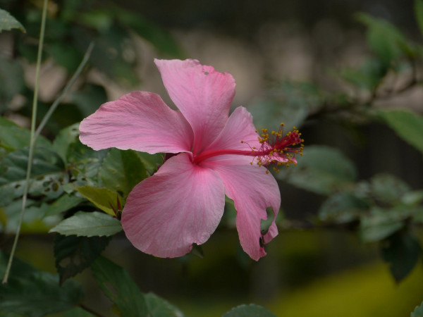
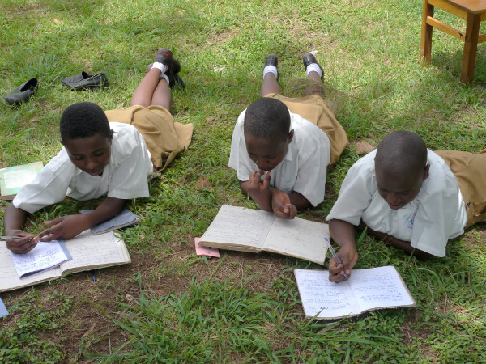
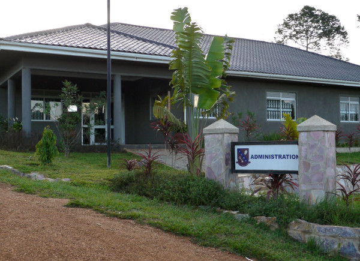

November 2012
Bram Moolenaar, treasurer of ICCF Holland, visited the Kibaale Children's
Centre in November 2012. This is his report.
Click on the images below for an enlargement.
You can find many more pictures on
Google+.
There is also a
print version of the report
And here is a Chinese translation (local copy).
Power to Kibaale
Bringing city power to Kibaale has been promised many times. Especially
during election time. Now finally a work crew is actually putting up poles and
attaching cables. Most work is done by hand, I have seen more than a dozen
men in blue overalls pushing and pulling to get a pole up. Still, the
transformer isn't there yet and someone mentioned that in a swamp area the
wires are missing. We will have to see when it really works. When it does, I
am sure the atmosphere in town will radically change. Bright lights instead
of oil lamps. Loud TV and radio sounds everywhere. The good side is that
carpentry shops can use power tools, the maize grinder will run and welding
will be possible. Expect business to flourish! We can see a sample of this in
our vocational school, they use power tools there now. Notice the Vim drill in
the picture :-).
For the project there was supposed to be an extra transformer, but now the
wires only go up to the clinic. Apparently the budget wasn't sufficient.
Anyway, city power is not reliable, thus the generator and solar system will
remain. The wires between the buildings also need to be replaced, they are
getting old and were of low quality when they were put in twenty years ago.
Maintenance is required to keep the project running.
|
|
|

With power a carpenter can do serious work (especially if Vim is the tool!)
|

Greens and flowers attract birds.
|
|
|
Birds and flowers
When I first came to the project it was mostly empty flat land. Over the years
many trees and bushes have been planted. Every time a building was constructed
the surroundings were also improved. Especially around the clinic and
secondary school. Not only does this make the project look green and
friendly, it also attracts various birds. I have seen swallows, weaver birds,
herons and an Ibis. And several others I don't know what they are called.
|
|
Internet
Communication with Kibaale has always been a struggle. In the first years we could only
use letters and fax. Then internet reached Masaka, and staff had to travel for
an hour to visit an internet café. We had satellite internet for a while, but
it was too expensive. Mobile operators brought data plans a few years ago,
but the signal in Kibaale was very unreliable. Last year Airtel set
up a booster tower with good signal, finally it works! It's a bit slow, but
good enough for exchanging email and finding information on the Internet. With
a bit of luck I can now send a question to the sponsorship office and receive
an answer the same day. When the Airtel
tower fails, which happens sometimes, MTN can be used. But the signal is
weak, thus I brought several antennas to try out. One works reasonably well,
thus MTN is now the backup connection. The next step will be to install WLAN,
so that several people can share one subscription.
|
|
|

Secondary school students are learning outside under a tree
|

Third class in the primary school
|
|
|
Business as usual
Most of the project runs very smooth now. It is very good to see that the
project keeps going and helps hundreds of children and their families every
day. Of course there are the individual success and failure stories.
One girl finished the catering class, worked at a
hotel in Kyotera for a year and saved up enough money to go for a hotel
management training. That is what we like to see: after our initial help the
children manage to take care of themselves.
It doesn't always work, we do have dropouts. Every child is different and we
have many that come from broken families, which has its effects on the
children. A lot of effort is put into counselling. One boy was misbehaving
and put "on hold" for a year, he had to attend special sessions. Now he is in
his second year of high school, his motivation is back and he makes good
progress.
|
|
Timothy center
Kibaale is our biggest site, where 831 children go for primary, secondary and
vocational school. Higher level education is given in various schools,
usually in cities. We were still missing a good quality A-levels school, thus
we started one in Masaka last year. Only for girls now. The first group
started their exams when I was there. The Timothy center is more than a
school, it is setup as a learning center of various kinds. It is also used
for teacher training. It is located next to a wetland, which gives it lovely
views. We consider renting out some of the houses. Most of the Canadian
volunteers live here now, Kibaale is run by our Ugandan staff.
|
|
|

The Timothy center high school in Masaka
|
Future plans
We need more choices for professional training. We sometimes
drop children because we can't find a fit for what
they want to do. I have proposed starting an agricultural school. Perhaps
combined with a research center. Most people in this area live from farming.
If we can improve their harvest and make their crops less sensitive for
diseases, that would help them tremendously. We know that quite a few of our
children end up
being a farmer, we better make sure they are well trained for that. The
research center can help finding better types of food to grow. For example,
one family I visited was suffering from a disease causing their Matoke plans
not to produce any crops. If we can find a resistant kind of Matoke this
would completely change their lives. If you know someone who could help set
this up, let us know!
Bram Moolenaar
many more pictures on Google+.
top
|


{kind=link}
{kind=link}
{kind=link}